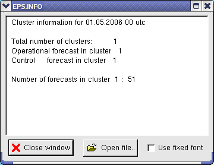

Diana User Guide: Information |
Previous: Wave spectrum
|
Next: Profet Drawing Tools
|
Index
Information
When
Information...
is selected, a menu of available information files is displayed. Each file displays a dialogue.

Open file
lets you open a file from disk.
Use fixed font
sets the document font to courier.
Diana User Guide: Information |
Previous: Wave spectrum
|
Next: Profet Drawing Tools
|
Index
 Information
Information